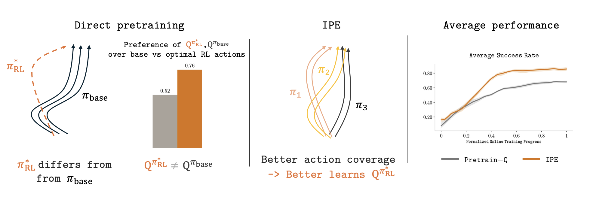
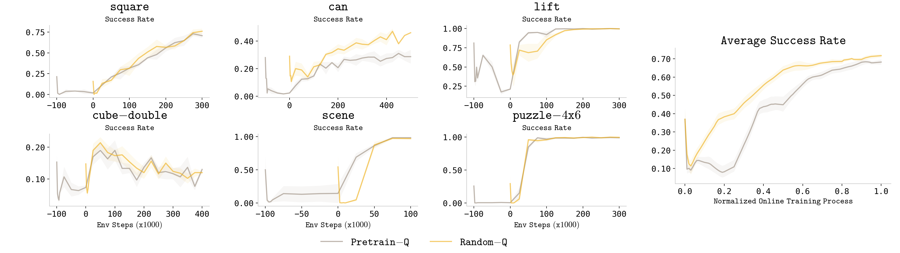

IPE: Q-Function Pretraining Doesn't Transfer — Bootstrap from Policy Ensembles Instead
Paper: "Do You Really Need to Pretrain Q-Functions for Online RL Fine-Tuning?" (arXiv 2607.27203, v2 Aug 3 2026). Authors: Perry Dong, Ron Polonsky, Dorsa Sadigh, Chelsea Finn.
TL;DR
- Given a pretrained base policy, pretraining the Q-function on offline data before online RL fine-tuning often buys you almost nothing over a randomly initialized Q — a systematic result across six sparse-reward manipulation benchmarks, contradicting the "of course you should pretrain the value too" default.
- The diagnosis is an objective mismatch: offline value learning converges toward \(Q^{\pi_{\text{base}}}\), the value of the frozen base policy, but online fine-tuning needs \(Q^{\pi^*_{\text{RL}}}\), the value of the policy RL will converge to. The gap persists even after offline value maximization — \(Q^{\pi_{\text{base}}}\) is near chance (0.52) at preferring optimal-RL actions over base actions, where \(Q^{\pi^*_{\text{RL}}}\) prefers them at 0.76.
- The fix is not a better value loss but better data: Initialization via Policy Ensemble (IPE) trains N diverse policies on the same demonstrations and pools their rollouts to seed the online replay buffer, yielding an average 1.26× improvement in fine-tuning performance over naive Q-pretraining.
Why this matters
Pretrain-then-finetune is the dominant recipe for policies, and the reflexive extension is to pretrain every component — including the critic. This paper is a clean counterexample to that reflex, and the shape of the argument matters well beyond robot manipulation. The value function you can learn from offline data is the value of the data-generating policy (or something near it); the value function online RL needs is the value of the improved policy it is heading toward. Those are different objects, and no amount of offline polishing of the first gets you the second.
For this tracker's core interest — RL post-training of LLMs — the analogy is direct. Whether to pretrain/warm-start the critic (or process reward model, or advantage estimator) before RLHF/RLVR is a recurring design decision, usually resolved by intuition. This paper says the intuition has a hole: a critic distilled from base-policy behavior systematically misranks exactly the actions that RL exploration needs to discover. And its proposed cure — inject policy diversity into the bootstrap data rather than refine the value target — reads like a value-side justification for practices like sampling from multiple checkpoints or heterogeneous policies when building training buffers. The result also rhymes with the recent "critic-free" drift in LLM RL (GRPO-family methods): if pretrained critics start out wrong in precisely the direction that matters, group-relative baselines computed from fresh rollouts look less like a compromise and more like a principled choice.
The core idea

Figure 1 from the paper: (left) the RL-optimal policy differs from the base policy, and \(Q^{\pi_{\text{base}}}\) barely prefers optimal-RL actions over base actions (0.52 vs. 0.76 for \(Q^{\pi^*_{\text{RL}}}\)); (middle) an ensemble of diverse policies gives better action coverage; (right) IPE beats direct Q-pretraining on average success rate.The question is posed precisely: you already have a pretrained base policy \(\pi_{\text{base}}\) (e.g. behavior-cloned from demonstrations). Should you also pretrain \(Q_\phi\) on the offline data before online fine-tuning? The conventional pipeline says yes — an accurate value estimate should make early online updates less destructive. The paper's experiments say the benefit mostly isn't there, and its analysis explains why.
Offline value pretraining — whether plain policy evaluation or offline value maximization à la offline RL — produces a Q-function anchored to the base policy's behavior distribution:
where \(\pi^*_{\text{RL}}\) is the policy online RL converges to (notation condensed from the paper's framing — verify exact statement in the paper). The two value functions agree on states the base policy visits but diverge exactly where fine-tuning creates improvement: on the actions the base policy rarely takes. The paper's preference-accuracy probe makes this concrete — even for a near-optimal base policy, \(Q^{\pi_{\text{base}}}\) ranks optimal-RL actions above base actions barely better than a coin flip. So the pretrained critic starts out confidently wrong about the comparisons that drive policy improvement, and online TD learning has to unlearn it — which is why random initialization does about as well.
The constructive insight: what actually transfers from pretraining is not value accuracy but data coverage. A single trained policy produces a narrow action distribution; a Q-function bootstrapped only from it collapses toward \(V^{\pi_{\text{base}}}\). Multiple policies trained independently on the same demonstrations target the same behavior but land in different places, and their pooled rollouts cover a broader slice of action space — enough for the online Q-function to see the contrasts it needs.
How it works
Online fine-tuning setup. The Q-function is trained by standard TD learning on replay data:
where \(\phi'\) is a target network and \(\tilde{a}^*_{t+1}\) the next action selected for the bootstrap target. Policy improvement happens through an edit policy \(\pi_{\text{edit}}\) that outputs residual corrections \(\hat{a}_t\) on top of the base action, trained with an entropy-regularized objective:
where \(a_t + \hat{a}_t\) is the edited action and \(\alpha\) the entropy temperature — fine-tuning as learned deltas on a frozen base, rather than full re-optimization.
IPE itself is almost embarrassingly simple. Three stages:
- Pretrain the base policy \(\pi_{\text{base}}\) on demonstrations (supervised learning), as usual.
- Train N additional policies on the identical data/action distribution — same target behavior, independent optimization, hence diverse action tendencies.
- Roll out all N+1 policies in the environment and pool the trajectories to initialize the online replay buffer. Online RL (TD + edit policy above) then runs from a randomly initialized Q-function but a diversity-rich buffer.
# IPE (condensed from the paper's method description)
D_demo ← offline demonstrations
π_base ← supervised pretraining on D_demo
for i = 1..N: # diverse policy ensemble
π_i ← independent training run on D_demo (same action distribution)
B ← {} # replay buffer
for π in {π_base, π_1, ..., π_N}:
B ← B ∪ rollouts(π, env) # pooled, diverse coverage
Q_φ ← random init # NOT pretrained
repeat (online fine-tuning):
collect env data with current policy → B
update Q_φ by TD loss on B (Eq. 1)
update π_edit by entropy-reg. loss (Eq. 2)
The point of the design: nothing about the value learning changes. All the leverage is in what data the Q-function gets to bootstrap from.
Results

Figure 2 from the paper: across Robomimic (square, can, lift) and OGBench (cube-double, scene, puzzle-4x6), fine-tuning with a pretrained Q-function (grey) barely differs from a randomly initialized one (yellow) — and oncan, random init is clearly better.
The negative result comes first and is the paper's backbone. On six sparse-reward continuous-control benchmarks — Robomimic's lift/can/square (7-DoF manipulation) and OGBench's cube-double (pick-and-place), scene (long-horizon), and puzzle-4x6 (combinatorial) — fine-tuning curves with Pretrain-Q and Random-Q are nearly indistinguishable on most tasks, and on can the random initialization actually wins. Whatever the pretrained critic learned, online RL doesn't cash it in.
The preference probe (their Fig. 3) sharpens the mechanism: \(Q^{\pi_{\text{base}}}\) and \(Q^{\pi^*_{\text{RL}}}\) are measurably different functions even when the base policy is near-optimal, and the pretrained critic is at ~0.52 accuracy — chance level — at preferring optimal-RL actions over base actions.
IPE, by contrast, delivers: an average 1.26× improvement in fine-tuning performance over naive Q-function pretraining across the benchmark suite, with the average-success-rate curve dominating direct pretraining through most of online training (Fig. 1, right panel). Consistent with the diagnosis, the gain comes from coverage — the ensemble's pooled rollouts let the online critic learn contrasts a single policy's data never exposes.
How it connects
- HL-Gauss PPO (this list): that work improves how the value function is represented and regressed; this paper says the binding constraint at initialization is what data the value learns from, not the loss. The two are complementary levers on the same critic.
- RL pretraining scaling law (this list): both live in the pretrain-then-RL regime and ask what pretraining artifacts actually help downstream RL. IPE's answer — behavioral diversity transfers, value estimates don't — is a useful qualitative constraint on how to spend pretraining compute.
- One-layer RL post-training (this list): IPE's edit-policy formulation (learned residuals on a frozen base) is the continuous-control cousin of minimal-update post-training for LLMs; both treat fine-tuning as a small correction on a strong prior rather than re-optimization.
- ISO RLVR optimizer (this list): GRPO-style critic-free methods sidestep exactly the failure mode documented here — a warm-started critic that misranks the actions exploration needs. This paper is de facto evidence for why fresh, rollout-grounded baselines are competitive with learned critics early in training.
Critical take
The scope is narrower than the title question suggests. Everything here is continuous-control manipulation with a residual/edit-policy fine-tuning architecture; "Q-pretraining doesn't help" is demonstrated for this pipeline, and the paper's own framing (Q-functions pretrained on data from diverse policies are the useful kind — per the thread) hints the negative result is about naive single-policy pretraining, not value pretraining per se. The headline 1.26× is measured against naive Q-pretraining — the fairer everyday baseline, random init, is close behind naive pretraining on most tasks, so the practical delta over "just don't pretrain" is what you should price in, and it's visible but less dramatic in the average curve. IPE also isn't free: N extra policy-training runs plus N+1 rollout collections shift cost from pretraining into environment interaction, which is exactly the expensive resource in the settings (real robots) where this recipe would matter most. How diversity scales is untested — independent seeds on identical data is the weakest possible diversity mechanism, and it's plausible the effect shrinks as base policies get stronger and more mode-collapsed. Finally, the transfer of the diagnosis to LLM RLHF (KL-anchored, discrete, off-policy-lite) is my inference from the structure of the argument, not something the paper tests — verify before leaning on it. None of this dents the paper's real contribution: a crisp, mechanistic account of why an intuitively good idea fails, which is rarer and more useful than another method that works.
If you remember three things
- Offline value pretraining learns \(Q^{\pi_{\text{base}}}\); online fine-tuning needs \(Q^{\pi^*_{\text{RL}}}\) — and the two disagree precisely on the base-vs-improved action comparisons that drive learning (0.52 vs. 0.76 preference accuracy). That's why pretrained critics wash out against random init.
- What transfers is coverage, not accuracy: IPE seeds the replay buffer with rollouts from N+1 independently trained policies on the same data and gets 1.26× over naive Q-pretraining — without changing the value loss at all.
- When designing pretrain→RL pipelines (robots or LLMs), budget for behavioral diversity in the bootstrap data before budgeting for a fancier critic initialization.